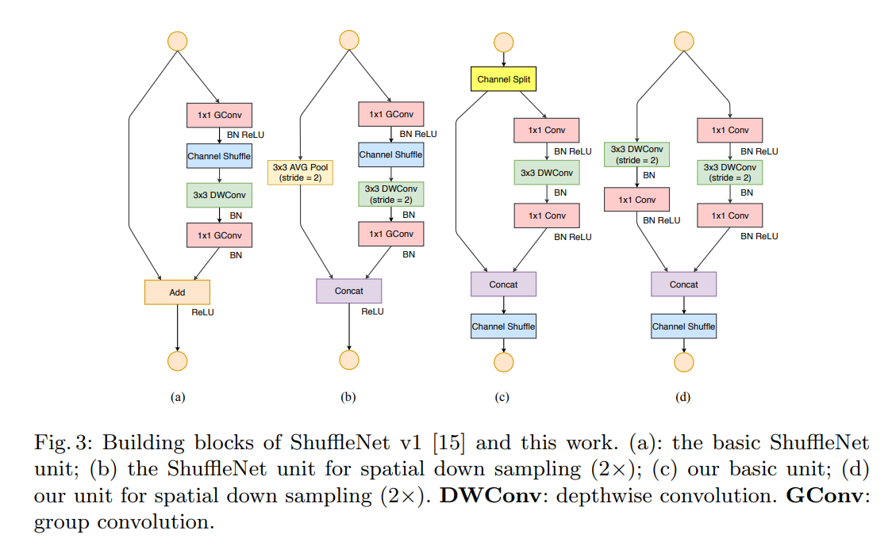

ShuffleNet V2: Practical Guidelines for Efficient CNN Architecture Design
这篇文章不仅引进了ShuffleNet V2,更重要的是提供了大量优化网络结构、加速运算、提升效率的网络搭建建议。
为什么FLOPs指标还不充分
FLOPs指的是网络运算过程中需要执行的乘加步骤次数。
众所周知，大量网络如MobileNet,采用group convolution 与 depth-wise convolution,与dense convolution网络相比，几何级地降低了每一层的FLOPs.但是FLOPs并不是一个对运算速度与运算复杂度最直接的估量指标，它只是一个近似。不同的网络，尽管有相似的FLOPs，其速度也会有很大不同。
FLOPs与实际延迟之间一大差别在于没有考虑Memory access cost(MAC),第二大区别在于平行运算度(degree of parallelism).同时相同的运算结果会因平台而异，前文提出的通过matrix decomposition降维加速，理论上来说能有更低的FLOPs,但是在GPU上的执行速度却更慢，原因是某一个版本的CUDNN为卷积特殊优化过。
因此提出建议应该用速度而非FLOPs进行讨论，并且需要说明平台。
本文的贡献就是先提出了设计高效网络的一些建议，并提出shuffleNet V2
实用建议
建议一,使用等channel宽度以减少MAC
卷积的FLOPs为,假设内存足够大，MAC为进一步推得
因此对于相等的FLOPs以及相同的feature map大小，输入输出channel数一致时，MAC最小。尽管这只是理论值，但是实验可以证明这一点(本文对不同的卷积的c1,c2配比进行了实验对比，证明了这点)。
建议二，过多的group convolution提升了MAC
理论分析 MAC与 the number of groups 正相关。
在同等FLOPs的情况下，group number越大速度越慢，但是值得注意的是为了保证同等FLOPs,增大group number时channel数也会提升。效果在GPU上比较明显。
建议三，网络的碎片化降低了并行度
这里指的是一个block里面并行的卷积与pooling层，这些平行但不并行的运算会多次触发GPU的启动与同步。碎片化运行在GPU上影响较大，在CPU上影响不大
建议四，ReLU,元素间相加等element-wise operators同样不可忽略
删除ResNet中的ReLU与shortcut会看到约20%的加速，尽管它们很必要，但是却是事实上影响速度的。
ShuffleNet V2:
基本单元结构及其与ShuffleNet V1的比较如图

直觉：
- 用卷积替代Group Convolution+channel shuffle
- 使用Concat + Channel Shuffle替代Add
- downsampling时不使用avg pooling
Channel split就是简单地torch.split(dim=1)
连续出现的Concat, Channel Shuffle, Channel Split可以放在一起作为一个统一的element-wise operation。